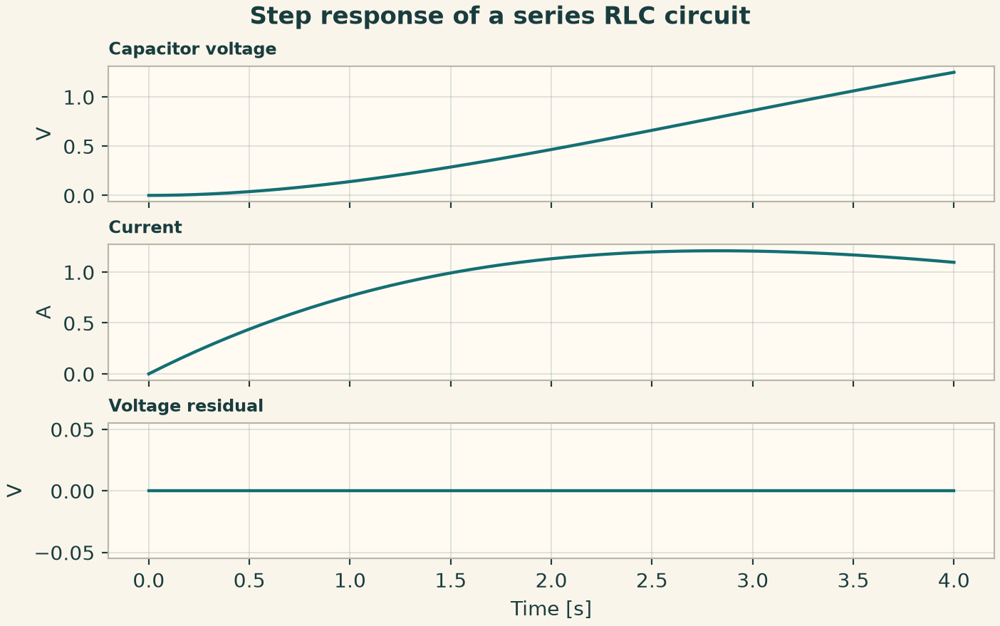
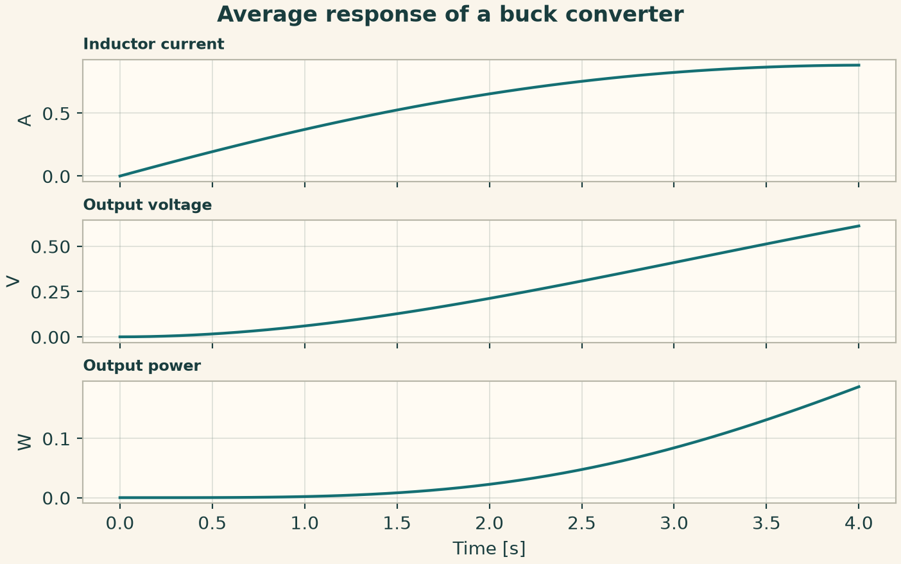
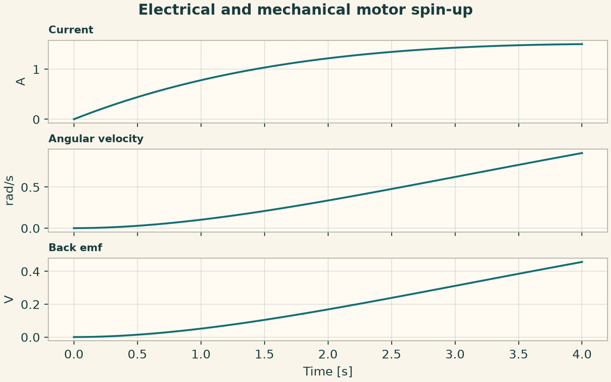
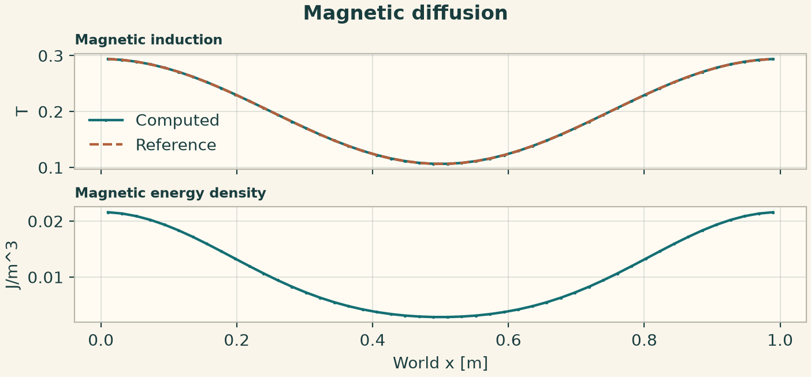
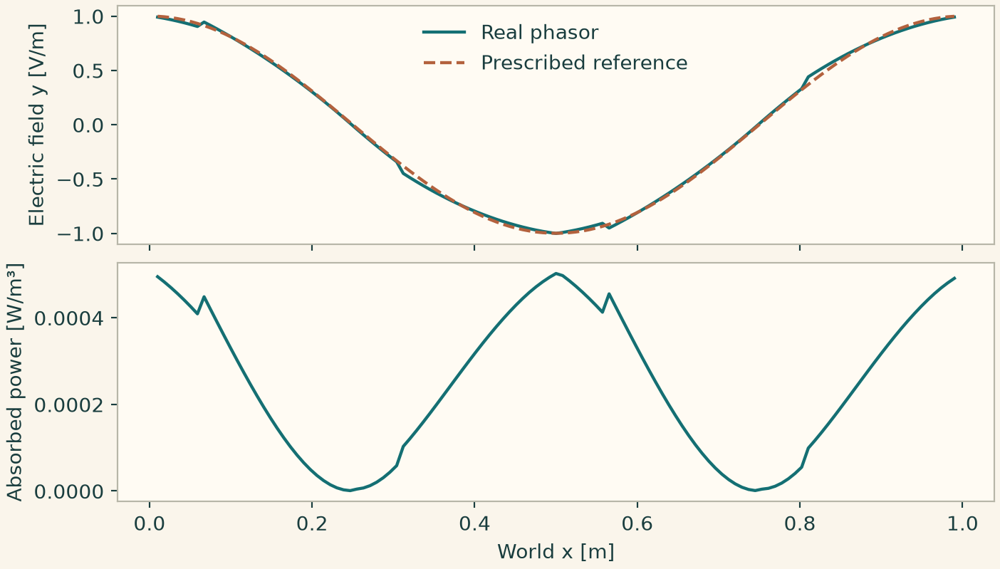
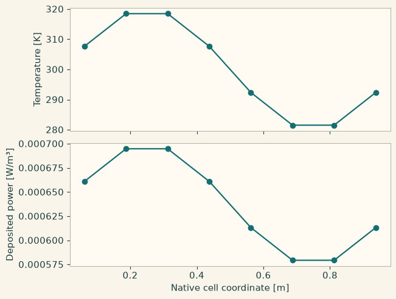
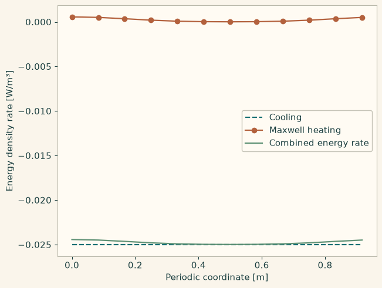
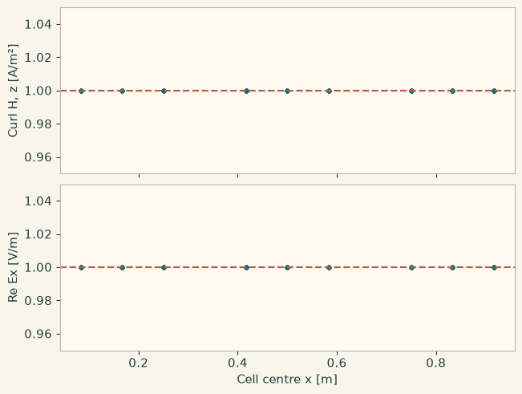

Docs › Worked physics and service recipes › Electromagnetics recipes
6.7 Electromagnetics recipes
6.7.1 Step response of a series RLC circuit
Apply a voltage step to a series circuit initially at rest. Read charge through capacitor voltage and verify Kirchhoff closure through the derived voltage residual.
from onesim.physics.electromagnetics import SeriesRLC
domain = LumpedDomain()
model = SeriesRLC(
domain=domain.system,
resistance=1,
inductance=2,
capacitance=3,
source_voltage=2,
)
t, data = history_case(
domain,
model,
dict(charge=0.0, current=0.0),
("capacitor_voltage", "current", "voltage_residual"),
end=4,
dt=0.02,
)
np.testing.assert_allclose(data["voltage_residual"], 0, atol=1e-12)
fig = history_plot("Step response of a series RLC circuit", model, t, data)
plt.show()

6.7.2 Average response of a buck converter
Keep duty cycle fixed and advance the average inductor current and output voltage. The model represents averaged switching and load dynamics.
from onesim.physics.electromagnetics import AveragedBuckConverter
domain = LumpedDomain()
model = AveragedBuckConverter(
domain=domain.system,
input_voltage=2,
duty_cycle=0.4,
inductance=2,
capacitance=3,
load_resistance=2,
series_resistance=0.2,
)
t, data = history_case(
domain,
model,
dict(inductor_current=0.0, output_voltage=0.0),
("inductor_current", "output_voltage", "output_power"),
end=4,
dt=0.02,
)
assert data["output_power"].min() >= 0 and data["output_voltage"][-1] > 0
fig = history_plot("Average response of a buck converter", model, t, data)
plt.show()

6.7.3 Electrical and mechanical motor spin-up
A fixed supply and no load torque drive current, angular acceleration and back EMF. Verify the proportionality between speed and back EMF.
from onesim.physics.electromagnetics import DCMotor
domain = LumpedDomain()
model = DCMotor(
domain=domain.system,
resistance=1,
inductance=2,
motor_constant=0.5,
inertia=2,
viscous_friction=0.2,
applied_voltage=2,
)
t, data = history_case(
domain,
model,
dict(current=0.0, angular_velocity=0.0, angle=0.0),
("current", "angular_velocity", "back_emf"),
end=4,
dt=0.02,
)
np.testing.assert_allclose(data["back_emf"], 0.5 * data["angular_velocity"])
fig = history_plot("Electrical and mechanical motor spin-up", model, t, data)
plt.show()

6.7.4 Decay of a periodic magnetic Fourier mode
The diffusivity is the reciprocal of permeability times conductivity. Compare the native sample values against the decaying magnetic mode.
from onesim.physics.electromagnetics import MagneticDiffusion
line = Line(start=(0, 0, 0), end=(1, 0, 0))
model = MagneticDiffusion(domain=line.line, permeability=2, conductivity=25)
end = 0.08
wave = lambda x: 0.2 + 0.1 * np.cos(2 * np.pi * x)
result = line_experiment(
line,
model,
dict(magnetic_induction=wave),
FiniteDifference(diffusion=CentralLaplacian()),
cells=48,
end=end,
dt=0.0005,
)
exact = lambda x: 0.2 + 0.1 * np.cos(2 * np.pi * x) * np.exp(
-0.02 * (2 * np.pi) ** 2 * end
)
b = result.field(model.field("magnetic_induction"))
np.testing.assert_allclose(b.values, exact(b.space.dof_coordinates[:, 0]), atol=3e-4)
fig = profile_figure(
"Magnetic diffusion",
result,
model,
("magnetic_induction", "magnetic_energy_density"),
reference={"magnetic_induction": exact},
)
plt.show()

6.7.5 Driven periodic Maxwell phasor
Construct an impressed current to produce an electric cosine mode. Compare the real phasor component at physical points and plot absorbed power separately. The current uses the chosen time sign and peak amplitude convention.
import numpy as np
import matplotlib.pyplot as plt
import onesimulation_plot_theme as theme
from onesim.cad.d3 import Box
from onesim.materials.electromagnetic import IsotropicElectromagneticMaterial
from onesim.materials.properties.units.constants import VACUUM_PERMEABILITY as MU0
from onesim.materials.properties.units.constants import VACUUM_PERMITTIVITY as EPS0
from onesim.meshing import PeriodicPair, StructuredTetrahedralMesher
from onesim.numerics import Numerics
from onesim.numerics.fem import FiniteElement, Nedelec
from onesim.numerics.linear import ComplexSparseDirect
from onesim.physics.electromagnetics import FrequencyDomainMaxwell
from onesim.simulation import Problem, Simulation
from onesim.simulation.problem_definition.boundaries import PeriodicBoundary
box = Box(length=1, width=1, height=1)
frequency, conductivity = 1e7, 0.001
omega = 2 * np.pi * frequency
epsilon = EPS0 + 1j * conductivity / omega
factor = (4 * np.pi**2 - omega**2 * MU0 * epsilon) / (1j * omega * MU0)
def current(x, y, z):
return np.cos(2 * np.pi * x)[:, None] * np.array([0, factor, 0])
model = FrequencyDomainMaxwell(
domain=box.volume,
frequency=frequency,
impressed_current=current,
material=IsotropicElectromagneticMaterial(
relative_permittivity=1,
relative_permeability=1,
conductivity=conductivity,
),
phasor_convention="exp(-i*omega*t)",
amplitude_convention="peak",
)
conditions = tuple(
PeriodicBoundary(
physics=model,
pair=PeriodicPair(
getattr(box.boundaries, axis + "_min"),
getattr(box.boundaries, axis + "_max"),
),
)
for axis in "xyz"
)
mesh = StructuredTetrahedralMesher(cells=(4, 4, 4)).generate(box)
sim = Simulation(
problem=Problem(
name="Driven Maxwell wave",
geometry=box,
physics=(model,),
boundary_conditions=conditions,
),
mesh=mesh,
numerics=Numerics(
spatial=FiniteElement(element=Nedelec(order=2)),
linear_solver=ComplexSparseDirect(),
),
)
sim.validate().require_valid()
result = sim.solve_stationary()
x = np.linspace(0.01, 0.99, 121)
points = np.column_stack((x, np.full_like(x, 0.31), np.full_like(x, 0.47)))
ey = result.field(model.electric_field).evaluate(points)[:, 1]
q = np.asarray(result.field(model.absorbed_power_density).evaluate(points)).ravel()
assert np.max(np.abs(ey - np.cos(2 * np.pi * x))) < 0.25
assert q.min() >= 0
theme.use_theme()
fig, (ax, power) = plt.subplots(
2, 1, sharex=True, figsize=(7.2, 4.1), layout="constrained"
)
ax.plot(x, ey.real, label="Real phasor")
ax.plot(x, np.cos(2 * np.pi * x), "--", label="Prescribed reference")
ax.set_ylabel("Electric field y [V/m]")
ax.legend(frameon=False)
power.plot(x, q)
power.set(xlabel="World x [m]", ylabel="Absorbed power [W/m³]")
plt.show()

6.7.6 Couple cell temperature and native Maxwell edges
Use the two directed stationary coupling blocks with a temperature-dependent dielectric tensor. The Maxwell block uses real coordinates followed by imaginary coordinates. Verify the temperature derivatives in both coupling directions and plot the absorbed power in the heat cells.
import numpy as np
import matplotlib.pyplot as plt
import onesimulation_plot_theme as theme
theme.use_theme()
from onesim.materials.properties.property_ir import MaterialIR, MaterialPropertyIR
from onesim.materials.properties.numerics.evaluation.property_evaluation import MaterialPropertyService
from onesim.physics.electromagnetics import operators as em_ops
grid_shape = (8, 4, 4)
x_cells = (np.arange(grid_shape[0]) + 0.5) / grid_shape[0]
reference_temperature = np.full(grid_shape, 300.0)
temperature = reference_temperature + 20 * np.broadcast_to(
np.sin(2 * np.pi * x_cells)[:, None, None], grid_shape,
)
diagonal = "1.5 + 0.002*(temperature - 300) + 1j*(0.2 + 0.001*(temperature - 300))"
permittivity = MaterialPropertyIR(
"epsilon_r", ((diagonal, 0, 0), (0, diagonal, 0), (0, 0, diagonal)),
"1", value_kind="tensor", value_type="complex", symmetry="general",
dependencies=("temperature",), dependency_units={"temperature": "K"},
)
material = MaterialIR("thermal-dielectric", "1", (permittivity,))
evaluator = MaterialPropertyService().evaluator(material, "epsilon_r")
incident_source = np.broadcast_to([1+0.2j, 0, 0], (*grid_shape, 3)).copy()
reference = em_ops.periodic_maxwell_fvm_operator(
shape=grid_shape, extents=(1.0, 1.0, 1.0), wave_number_squared=4.0,
relative_permittivity=evaluator, source=incident_source,
material_state={"temperature": reference_temperature},
)
material_to_em = em_ops.periodic_maxwell_material_coupling(
"temperature-to-maxwell", target="maxwell", source="heat",
operator=reference, dependency="temperature",
)
power_to_heat = em_ops.periodic_maxwell_power_coupling(
"maxwell-to-heat", target="heat", source="maxwell", operator=reference,
dependency="temperature", residual_measure="density",
)
electric = np.broadcast_to([1.0+0.2j, 0.4j, 0.0], (*grid_shape, 3)).ravel()
edge_coordinates = np.r_[electric.real, electric.imag]
cell_temperature = temperature.ravel()
em_update = material_to_em.operator.nonlinear_contribution(edge_coordinates, cell_temperature, None)
heat_update = power_to_heat.operator.nonlinear_contribution(cell_temperature, edge_coordinates, None)
np.testing.assert_allclose(
material_to_em.operator.nonlinear_contribution(edge_coordinates, reference_temperature.ravel(), None).residual,
0.0, atol=1e-14,
)
# Verify the two temperature derivatives at the same realified electric state.
direction = np.cos(np.arange(cell_temperature.size))
h = 1e-3
perturbations = (cell_temperature - h * direction, cell_temperature + h * direction)
em_minus, em_plus = [
material_to_em.operator.nonlinear_contribution(edge_coordinates, values, None).residual
for values in perturbations
]
heat_minus, heat_plus = [
power_to_heat.operator.nonlinear_contribution(values, edge_coordinates, None).residual
for values in perturbations
]
np.testing.assert_allclose(
em_update.source_jacobian @ direction, (em_plus - em_minus)/(2*h),
atol=1e-12, rtol=1e-7,
)
np.testing.assert_allclose(
heat_update.target_jacobian @ direction, (heat_plus - heat_minus)/(2*h),
atol=1e-12, rtol=1e-7,
)
# The source appears with a minus sign on the left of the heat balance.
power_density = -heat_update.residual.reshape(grid_shape)
assert np.all(power_density > 0)
fig, (a, b) = plt.subplots(2, 1, sharex=True, layout="constrained")
a.plot(x_cells, temperature[:, 0, 0], "o-")
b.plot(x_cells, power_density[:, 0, 0], "o-")
a.set_ylabel("Temperature [K]")
b.set(xlabel="Native cell coordinate [m]", ylabel="Deposited power [W/m³]")
plt.show()

6.7.7 Compose Maxwell heating into an energy equation and DAE
Add a power source to a declared energy balance and evaluate its contribution with a manufactured electric field. The base provider supplies a linear cooling rate. Compare the full DAE adapters and the standalone energy-rate adapter on the same snapshot. The periodic compatibility names are evaluated alongside the canonical constructors.
import numpy as np
import matplotlib.pyplot as plt
import onesimulation_plot_theme as theme
theme.use_theme()
from scipy import sparse
from onesim.numerics.discretization.equations.contracts.operators.operator_contracts import (
DaeResidual, SpatialExecutionContext,
)
from onesim.physics.electromagnetics import operators as em_ops
from onesim.results.assessment.numerics.spatial_result_adapter import SpatialResultFieldSpec
from onesim.simulation.problem_definition.declarations.specification import EquationSpec, FieldSpec
from onesim.simulation.state.history.state_snapshot import StateSnapshot
from onesim.simulation.state.layout.state_vector import Residual
energy_id = "energy_density"
energy_equation = EquationSpec.from_residual(
"energy-balance", "dt(energy_density) + 0.05 * energy_density = 0",
(energy_id,), domain="periodic-box",
time_derivative_order=1, residual_unit="W/m^3",
field_definitions=(FieldSpec(energy_id, "J/m^3", carrier_kind="cell"),),
)
heated_equation = em_ops.maxwell_heated_equation(energy_equation, energy_field=energy_id)
legacy_equation = em_ops.periodic_maxwell_heated_equation(energy_equation, energy_field=energy_id)
assert heated_equation == legacy_equation
assert "absorbed_power_density" in heated_equation.dependent_fields
assert heated_equation.term_definitions[-1].kind == "source"
print(heated_equation.formulation.residual_form)
grid = (12, 3, 3)
x = np.arange(grid[0]) / grid[0]
phase_amplitude = 0.6 + 0.4 * np.cos(2*np.pi*x)
electric = np.zeros((*grid, 3), dtype=complex)
electric[..., 0] = (1 + 0.3j) * phase_amplitude[:, None, None]
# E points along x and depends only on x, so curl(E) is zero.
k2 = 4.0
epsilon = 1.5 + 0.2j
maxwell = em_ops.periodic_maxwell_fvm_operator(
shape=grid, extents=(1.0, 1.0, 1.0), wave_number_squared=k2,
relative_permittivity=epsilon, source=-k2 * epsilon * electric,
)
constraint = em_ops.periodic_maxwell_dae_constraint(maxwell, material_fields={})
energy = np.full(np.prod(grid), 0.5)
snapshot = StateSnapshot("maxwell-energy", 0.0, {
energy_id: energy,
constraint.field_ids[0]: electric.real,
constraint.field_ids[1]: electric.imag,
})
context = SpatialExecutionContext(constraint.to_carrier().carrier_id, snapshot.state_type, 0.0)
np.testing.assert_allclose(constraint(snapshot, 0.0), 0.0, atol=1e-12)
class CellCoolingRate:
state_field_ids = (energy_id,)
jacobian_scalar_representation = "physical_real"
result_fields = (SpatialResultFieldSpec(energy_id, "Energy density", "J/m^3", "cell"),)
def residual(self, values, context):
return Residual(-0.05 * np.asarray(values), context.state_type)
def real_jacobian(self, values, context):
return -0.05 * sparse.eye(np.size(values), format="csr")
class CellCoolingDae:
# The field order of the physical rate and its codec derivative is explicit.
result_fields = CellCoolingRate.result_fields
def residual(self, snapshot, context):
rate = CellCoolingRate()
return Residual(DaeResidual(
differential_rate=lambda state, t: rate.residual(state.field(energy_id), context).values,
algebraic_residual=constraint,
differential_field_ids=(energy_id,),
differential_codec_jacobian=self.rate_jacobian,
algebraic_field_ids=constraint.field_ids,
), context.state_type)
@staticmethod
def rate_jacobian(snapshot, time, codec):
columns = codec.field_dof_indices(energy_id)
rows = np.arange(len(columns))
return sparse.csr_matrix(
(np.full(len(columns), -0.05), (rows, columns)),
shape=(len(columns), len(codec.dof_map.descriptors)),
)
rate_operator = em_ops.periodic_maxwell_energy_rate(CellCoolingRate(), constraint, energy_field=energy_id)
dae_operator = em_ops.maxwell_dae_heating(CellCoolingDae(), constraint, energy_field=energy_id)
dae_alias = em_ops.periodic_maxwell_dae_heating(CellCoolingDae(), constraint, energy_field=energy_id)
total = rate_operator.residual(snapshot, context).values
for adapter in (dae_operator, dae_alias):
residual = adapter.residual(snapshot, context).values
np.testing.assert_allclose(residual.differential_rate(snapshot, 0.0), total)
np.testing.assert_allclose(residual.algebraic_residual(snapshot, 0.0), 0.0, atol=1e-12)
cooling = CellCoolingRate().residual(energy, context).values
power = maxwell.absorbed_power_density(electric).ravel()
np.testing.assert_allclose(total - cooling, power, atol=1e-16)
fig, ax = plt.subplots(layout="constrained")
ax.plot(x, cooling.reshape(grid)[:, 0, 0], "--", label="Cooling")
ax.plot(x, power.reshape(grid)[:, 0, 0], "o-", label="Maxwell heating")
ax.plot(x, total.reshape(grid)[:, 0, 0], label="Combined energy rate")
ax.set(xlabel="Periodic coordinate [m]", ylabel="Energy density rate [W/m³]")
ax.legend()
plt.show()

6.7.8 Assemble nodal and Nédélec curl–curl systems
Assemble, solve and reconstruct a real nodal curl–curl system with an affine trace and a complex Nédélec system with a manufactured uniform field. The latter has an explicit empty essential-edge set. Feed the solved edge coefficients into the corresponding DAE constraint and check its residual.
import numpy as np
import matplotlib.pyplot as plt
import onesimulation_plot_theme as theme
theme.use_theme()
from onesim.cad.d3 import Box
from onesim.meshing import StructuredTetrahedralMesher
from onesim.numerics.fem.contracts.vector_fem import (
NedelecCurlCurlConfiguration, NedelecCurlCurlRequest,
NodalCurlCurlConfiguration, NodalCurlCurlRequest,
)
from onesim.physics.electromagnetics import operators as em_ops
from onesim.simulation.state.history.state_snapshot import StateSnapshot
from scipy.sparse import issparse
from scipy.sparse.linalg import spsolve
geometry = Box(length=1.0, width=1.0, height=1.0)
mesh = StructuredTetrahedralMesher(cells=(3, 3, 3)).generate(geometry)
points = np.asarray(mesh.coordinates)
tetrahedra = np.asarray(mesh.cells)
boundary = tuple(np.flatnonzero(np.any(np.isclose(points, 0.0) | np.isclose(points, 1.0), axis=1)).tolist())
rotation = np.column_stack((-0.5*points[:, 1], 0.5*points[:, 0], np.zeros(len(points))))
# Prescribe the affine field only on the Dirichlet nodes.
boundary_values = np.zeros_like(points)
boundary_values[list(boundary)] = rotation[list(boundary)]
nodal = em_ops.nodal_curl_curl_operator(
NodalCurlCurlRequest(
points, tetrahedra, source=(0.0, 0.0, 0.0), curl_coefficient=1.0,
boundary_nodes=boundary, boundary_values=boundary_values,
),
NodalCurlCurlConfiguration(),
)
nodal_system = nodal.assemble(None)
assert nodal_system.right_hand_side.size > 0
def solve_assembled(system):
matrix = system.matrix
if hasattr(matrix, "tocsr"):
matrix = matrix.tocsr()
elif hasattr(matrix, "to_scipy_sparse"):
matrix = matrix.to_scipy_sparse()
rhs = system.right_hand_side
solved = spsolve(matrix, rhs) if issparse(matrix) else np.linalg.solve(matrix, rhs)
np.testing.assert_allclose(matrix @ solved, rhs, atol=1e-12)
return solved
report = {"provider_id": "demo.direct", "converged": True}
nodal_solution = solve_assembled(nodal_system)
nodal_state = nodal.state_from_solution(nodal_solution, nodal_system, report)
nodal_fields = nodal.reconstruction(nodal_state, None)
np.testing.assert_allclose(nodal_fields[nodal.field_id], rotation, atol=1e-12)
nodal_curl_z = np.asarray(nodal_fields[nodal.curl_field_id])[:, 2]
np.testing.assert_allclose(nodal_curl_z, 1.0, atol=1e-12)
expected = np.array([1+0.3j, 0.2j, -0.2+0.1j])
mass_coefficient = 2.0+0.4j
edge_request = NedelecCurlCurlRequest(
points, tetrahedra, curl_coefficient=1.0, mass_coefficient=mass_coefficient,
source=mass_coefficient*expected, essential_edge_ids=(),
)
edge_configuration = NedelecCurlCurlConfiguration()
edge = em_ops.nedelec_curl_curl_operator(edge_request, edge_configuration)
edge_system = edge.assemble(None)
edge_solution = solve_assembled(edge_system)
edge_fields = edge.reconstruction(edge.state_from_solution(edge_solution, edge_system, report), None)
edge_field = np.asarray(edge_fields[edge.field_id])
np.testing.assert_allclose(edge_field, np.broadcast_to(expected, edge_field.shape), atol=1e-12)
np.testing.assert_allclose(edge_fields[edge.curl_field_id], 0.0, atol=1e-12)
constraint = em_ops.nedelec_maxwell_dae_constraint(
coordinates=points, cells=tetrahedra, carrier_id="demo-tetrahedra",
source=mass_coefficient*expected, essential_edge_ids=(), mass_coefficient=mass_coefficient,
configuration=edge_configuration,
)
snapshot = StateSnapshot("native-maxwell-edges", 0.0, dict(zip(
constraint.field_ids, (edge_solution.real, edge_solution.imag), strict=True,
)))
np.testing.assert_allclose(constraint(snapshot, 0.0), 0.0, atol=1e-12)
print(f"Nodal free coordinates {nodal_solution.size}, complex edge coordinates {edge_solution.size}")
centres = points[tetrahedra].mean(axis=1)
fig, (a, b) = plt.subplots(2, 1, sharex=True, layout="constrained")
a.plot(centres[:, 0], nodal_curl_z, ".", label="Nodal FEM")
a.axhline(1.0, color=theme.COPPER, linestyle="--")
a.set(ylabel="Curl H, z [A/m²]", ylim=(0.95, 1.05))
b.plot(centres[:, 0], edge_field[:, 0].real, ".", label="Nédélec FEM")
b.axhline(expected[0].real, color=theme.COPPER, linestyle="--")
b.set(xlabel="Cell centre x [m]", ylabel="Re Ex [V/m]", ylim=(0.95, 1.05))
plt.show()
